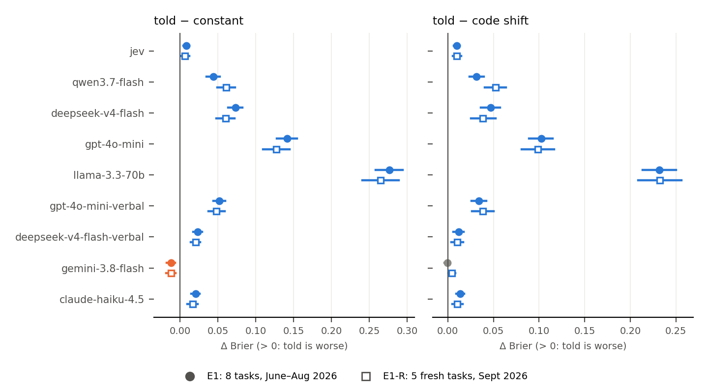

Progress report 2 (final): put the base rate in code, not in the prompt
2026-09-28, about 21:15 EDT · autonomous v2 session · all preregistered experiments complete (E1, E1-R, E2, E3)
The finding (one sentence). If you know how often the answer is "yes", putting that number in an LLM's prompt gives worse probabilities than applying the same number in code as a one-parameter logit shift. For most models on these tasks, it is even worse than predicting the base rate for every case.
- Preregistered replication (E1-R): 5 fresh September 2026 tasks × 3 seeds × 300 cases.
- Told − code shift was > 0 for 9 of 9 configurations after Holm.
- Told − constant was > 0 for 8 of 9. Gemini 3.8 Flash went the other way, as predicted.
- All seeds agree.
- Extensions: a stronger logprob model (E2) and two reasoning models (E3) show the same signs, so reasoning does not rescue "telling".
What was done since report 1
- Finished Claude Haiku 4.5 on both datasets, then ran the final Holm correction over all 9 configurations.
- E2 (preregistered §4): DeepSeek-V4-Pro via logprobs, as a boundary check on model strength.
- E3 (preregistered §5): reasoning models, DeepSeek-V4-Flash with thinking and GPT-5-mini at medium effort.
- Red team:
- AUROC-band breakdown;
- leave-one-task-out;
- three sentence wordings;
- told-then-recentred decomposition;
- stated vs logprob elicitation of the same model.
- Rewrote the README as a neutral guide, and wrote CLAIMS.md, DIGEST.md and WEBSITE_DRAFT.md.
Replication table (Brier difference; + = telling is worse)
Each cell is the mean over tasks of the per-task, seed-averaged difference, with a 95% bootstrap CI (test cases resampled within task, B=5000). Bold = significant after Holm across the 9 configurations. "Seeds" is the sign in each of the 3 seeds. "Tasks" counts tasks that are Holm-significant within the model, in the pooled direction.
Told − constant
| Model | E1: 8 tasks | seeds | tasks | E1-R: 5 fresh tasks | seeds | tasks |
|---|
| jev | +0.008 [+0.004, +0.012] | +++ | 1/8 | +0.006 [+0.001, +0.012] | +++ | 0/5 |
| qwen3.7-flash | +0.044 [+0.035, +0.052] | +++ | 5/8 | +0.061 [+0.049, +0.073] | +++ | 3/5 |
| deepseek-v4-flash | +0.073 [+0.063, +0.083] | +++ | 7/8 | +0.060 [+0.048, +0.072] | +++ | 4/5 |
| gpt-4o-mini | +0.141 [+0.128, +0.154] | +++ | 7/8 | +0.127 [+0.110, +0.144] | +++ | 4/5 |
| llama-3.3-70b | +0.276 [+0.258, +0.294] | +++ | 8/8 | +0.265 [+0.241, +0.289] | +++ | 5/5 |
| gpt-4o-mini-verbal | +0.052 [+0.044, +0.059] | +++ | 4/8 | +0.048 [+0.037, +0.059] | +++ | 3/5 |
| deepseek-v4-flash-verbal | +0.023 [+0.017, +0.029] | +++ | 5/8 | +0.020 [+0.014, +0.027] | +++ | 1/5 |
| gemini-3.8-flash | -0.012 [-0.018, -0.007] | −−− | 2/8 | -0.012 [-0.019, -0.006] | −−− | 1/5 |
| claude-haiku-4.5 | +0.020 [+0.015, +0.026] | +++ | 3/8 | +0.016 [+0.010, +0.023] | +++ | 3/5 |
Told − code shift
| Model | E1: 8 tasks | seeds | tasks | E1-R: 5 fresh tasks | seeds | tasks |
|---|
| jev | +0.010 [+0.007, +0.013] | +++ | 3/8 | +0.010 [+0.005, +0.015] | +++ | 2/5 |
| qwen3.7-flash | +0.032 [+0.024, +0.040] | +++ | 1/8 | +0.052 [+0.041, +0.064] | +++ | 3/5 |
| deepseek-v4-flash | +0.047 [+0.036, +0.057] | +++ | 4/8 | +0.039 [+0.025, +0.052] | +++ | 2/5 |
| gpt-4o-mini | +0.102 [+0.089, +0.115] | +++ | 5/8 | +0.098 [+0.081, +0.117] | +++ | 2/5 |
| llama-3.3-70b | +0.232 [+0.213, +0.250] | +++ | 6/8 | +0.232 [+0.209, +0.256] | +++ | 5/5 |
| gpt-4o-mini-verbal | +0.034 [+0.026, +0.042] | +++ | 2/8 | +0.038 [+0.027, +0.050] | +++ | 2/5 |
| deepseek-v4-flash-verbal | +0.012 [+0.006, +0.017] | +++ | 3/8 | +0.010 [+0.004, +0.017] | +++ | 1/5 |
| gemini-3.8-flash | -0.001 [-0.004, +0.002] | −+− | 0/8 | +0.004 [+0.000, +0.008] | +++ | 0/5 |
| claude-haiku-4.5 | +0.013 [+0.009, +0.018] | +++ | 3/8 | +0.010 [+0.005, +0.016] | +++ | 3/5 |
Extensions (single-model checks; uncorrected CIs; all seeds agree in every row)
| Model | told − const, E1 | told − const, E1-R | told − shift, E1 | told − shift, E1-R |
|---|
| DS-V4-Pro (logprob) | +0.051 [+0.043, +0.060] +++ | +0.042 [+0.033, +0.051] +++ | +0.030 [+0.022, +0.038] +++ | +0.029 [+0.019, +0.038] +++ |
| GPT-5-mini think | +0.033 [+0.026, +0.041] +++ | +0.015 [+0.008, +0.022] +++ | +0.028 [+0.022, +0.034] +++ | +0.009 [+0.003, +0.014] +++ |
| DS-V4-Flash think | +0.022 [+0.015, +0.028] +++ | +0.019 [+0.013, +0.026] +++ | +0.007 [+0.002, +0.012] +++ | +0.011 [+0.005, +0.017] +++ |

What survives the red team, and where it stops
- Code ≥ prompt everywhere.
- Across 117 model × task cells, telling was never better after Holm, and the code shift was better in 47.
- This holds for every AUROC band, all three wordings, both elicitation styles, and any single task dropped.
- Mechanism.
- Telling moves the average only partway toward the stated rate, or overshoots it. Logprob models went to 0.95–0.97 when told 80–88%.
- It doesn't change ranking.
- For the stated-probability models, re-centring the told output recovers almost all the loss. So the harm is mostly the missed average.
- Worse than the constant is scoped.
- It holds on hard tasks: most models' AUROC here is 0.52–0.63.
- Gemini (AUROC ≈ 0.70, stated probabilities) beats the constant when told.
- High AUROC alone isn't sufficient: DeepSeek-V4-Pro ranks NYC 311 at 0.80, and telling it still scored Brier 0.29 against the constant's 0.16.
- Failed tests, reported rather than hidden:
- The first per-task criterion (2/9 pass).
- P5 (refuted).
- The Gemini null prediction in E1-R (a tiny +0.004 instead).
Draft website write-up (~500 words)
Don't tell the model your base rate. Do the math yourself.
When you use an LLM to score cases ("will this ticket be resolved this week?", "will this pull request be
merged?"), its probabilities often run too high or too low. You know the real rate, say 20% of cases are yes. So
you add a sentence to the prompt: "For context, about 20% of cases like these are yes."
I tested whether that works, against a one-line alternative. Leave the prompt alone, and shift the model's scores
in code so that their average equals 20% (add the same constant to every score's log-odds). It needs no labelled
data, only the number you were going to put in the prompt.
Setup.
- Tasks: eight prediction tasks from public 2026 records, 300 test cases each:
- NYC 311 complaints;
- Chicago crime reports and food inspections;
- Hacker News posts;
- GitHub pull requests;
- Stack Overflow questions;
- shelter outcomes;
- flight delays.
- Models: nine setups from seven providers. They include cheap models, and two whose training data ends in 2023,
so they can't have memorised these outcomes.
- Seeds: three different estimates of the base rate, each from 100 labelled cases.
- Scoring: Brier score, with paired bootstrap confidence intervals, corrected for testing many models at once.
What I found.
- Doing it in code was never worse than telling the model, and usually better. Across 117 model-task
combinations, the prompt version never won after correction. The code version won 47.
- For eight of the nine setups, telling the model the base rate did worse than ignoring the model and answering
"20%" for every case. The damage ranged from +0.006 Brier to +0.27, where one model's error became nearly three
times the constant's.
- Telling moves the model's average only partway toward the stated number, or past it: several models jumped
to about 95% when told 80–88%.
- It doesn't help the model rank cases at all.
- The one exception was the model that ranked these tasks best (Gemini 3.8 Flash). Good ranking alone wasn't
enough, though. A stronger DeepSeek model ranked NYC 311 complaints well, yet telling it the rate still left it
far worse than the constant.
How I tried to break it.
- Preregistration. I wrote down the analysis and predictions and committed them to git before running
anything.
- A failed first test. My first criterion demanded a significant result on at least 5 of 8 tasks for each model.
Only 2 of 9 met it.
- A replication on untouched data. The overall pattern could have been a fluke of those tasks. So I pulled
fresh September 2026 data that no model or analysis had seen, and preregistered the test again. It held for all
nine setups, in all three seeds.
- Other checks. It also held:
- with three wordings of the sentence;
- with probabilities read from the model's internals or stated in text;
- when any one task was dropped;
- for two models allowed to reason before answering.
Honest limits.
- These tasks are hard. Most models ranked them only modestly (AUROC 0.52–0.71).
- On tasks like these, no calibration trick makes a weak model beat the constant. A small logistic regression on
100 labelled cases often did better.
- I tested short case descriptions and one prompt template per style, on September 2026 model versions.
Takeaways.
- Keep the prompt about the case.
- Put the base rate in code.
- Always check the model against the dumbest baseline, predicting the base rate for everyone. It is surprisingly
hard to beat.
Code, preregistrations and every result, including the tests that failed: (repo link)
Survived vs killed
| Survived / new | Killed or failed |
|---|
- Told − constant > 0 for 8/9 configurations (E1-R), plus E2 and both E3 models
- Told − code shift > 0 for 9/9 (E1-R), plus E2 and E3
- Platt(100) beats the shift in 38/117 cells and loses in 2
- v1: in-context examples help ranking on 5/8 tasks (not re-run on repaired data)
|
- E1 per-task criterion (≥5/8 tasks per model): only 2/9 pass
- v1 "shift beats telling on 5/8 for Jev" → 3/8
- "Told < constant regardless of ranking skill"
- P5: shift beats the constant when AUROC ≥ 0.65
- v1 shelter, crimes and GitHub numbers (leaks); all v1 Opus claims
- Full list: CLAIMS.md
|
Next 3 experiments
- High-signal tasks (AUROC > 0.75 for most models). Only 5 such cells exist now.
- Labelled examples instead of a base rate. In-context k examples vs a code-side fit on the same k.
- Rate in the system prompt. Also few-shot formats.
API spend (v2 ledger)
| Model | Decisions | Cost |
|---|
| claude-haiku-4.5 | 23,180 | $1.948 |
| gpt-5-mini-think | 23,180 | $1.653 |
| deepseek-v4-pro | 22,737 | $0.908 |
| llama-3.3-70b | 22,900 | $0.624 |
| gemini-3.8-flash | 23,180 | $0.620 |
| gpt-4o-mini | 22,764 | $0.463 |
| deepseek-v4-flash-think | 23,330 | $0.461 |
| gpt-4o-mini-verbal | 30,030 | $0.268 |
| deepseek-v4-flash | 22,833 | $0.146 |
| qwen3.7-flash | 22,721 | $0.103 |
| jev | 23,180 | $0.083 |
| deepseek-v4-flash-verbal | 23,180 | $0.070 |
| Total v2 | | $7.35 |
|---|
Cap: $30 for this session. v1 had spent $33.56 before it.